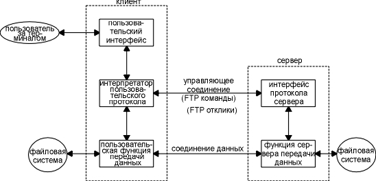
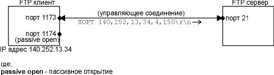
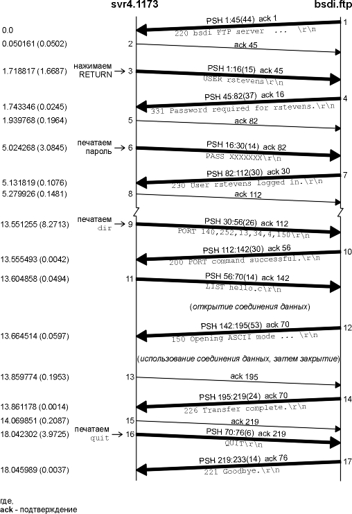
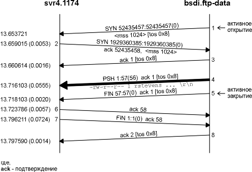
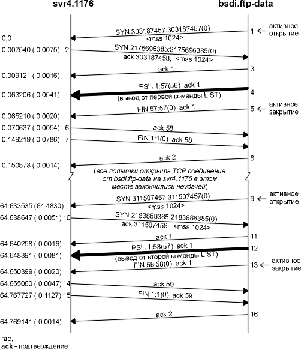
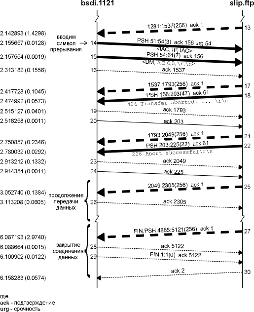

Глава 27 FTP: протокол передачи файлов
FTP это еще одно широко используемое приложение. Оно является стандартом Internet для передачи файлов. Необходимо различать передачу файлов, именно то, что предоставляет FTP, и доступ к файлам, что предоставляется такими приложениями как NFS (Network File System, глава 29). Передача файлов заключается в копировании целого файла из одной системы в другую. Чтобы использовать FTP, необходимо иметь открытый бюджет на сервере, или можно воспользоваться так называемым анонимным FTP (anonymous FTP).
Как и Telnet, FTP был создан для того, чтобы работать между хостами работающими под управлением различных операционных систем, использующих различные структуры файлов и, возможно, различные наборы символов. Telnet, однако, обеспечивает связь между разнородными системами, заставляя каждого участника соединения работать с одним и тем же стандартом: NVT, использующий 7-битный ASCII. FTP сглаживает различия между системами с использованием другого подхода. FTP поддерживает ограниченное количество типов файлов (ASCII, двоичное и так далее) и структуру файлов (поток байтов или ориентированный на запись).
RFC 959 [Postel and Reynolds 1985] является официальной спецификацией FTP. Этот RFC описывает историю и развитиие передачи файлов в течение времени.
FTP отличается от других приложений тем, что он использует два TCP соединения для передачи файла.
- Управляющее соединение устанавливается как обычное соединение клиент-сервер. Сервер осуществляет пассивное открытие на заранее известный порт FTP (21) и ожидает запроса на соединение от клиента. Клиент осуществляет активное открытие на TCP порт 21, чтобы установить управляющее соединение. Управляющее соединение существует все время, пока клиент общается с сервером. Это соединение используется для передачи команд от клиента к серверу и для передачи откликов от сервера. Тип IP сервиса для управляющего соединения устанавливается для получения "минимальной задержки", так как команды обычно вводятся пользователем (рисунок 3.2).
- Соединение данных открывается каждый раз, когда осуществляется передача файла между клиентом и сервером. (Оно также открывается и в другие моменты, как мы увидим позже.) Тип сервиса IP для соединения данных должен быть "максимальная пропускная способность", так как это соединение используется для передачи файлов.
На рисунке 27.1 показано общение клиента и сервера по двум соединениям.

Рисунок 27.1 Процессы, участвующие в передаче файлов.
Из рисунка видно, что интерактивный пользователь обычно не видит команды и отклики, которые передаются по управляющему соединению. Эти детали оставлены двум интерпретаторам протокола. Квадратик, помеченный как "пользовательский интерфейс", это именно то, что видит интерактивный пользователь (полноэкранный интерфейс, основанный на меню, командные строки и так далее). Интерфейс конвертирует ввод пользователя в FTP команды, которые отправляются по управляющему соединению. Отклики, возвращаемые сервером по управляющему соединению, конвертируются в формат, удобный для пользователя.
Обратите внимание на то, что существуют два интерпретатора протокола, которые по необходимости используют две функции передачи данных.
Протокол FTP предоставляет различные способы управления передачей и хранения файлов. Необходимо сделать выбор по четырем пунктам.
- Тип файла.
- ASCII файлы.
(По умолчанию) Текстовый файл передается по соединению данных как NVT ASCII. При этом требуется, чтобы отправитель конвертировал локальный текстовый файл в NVT ASCII, а получатель конвертировал NVT ASCII в текстовый файл. Конец каждой строки передается в виде NVT ASCII символа возврата каретки, после чего следует перевод строки. Это означает, что получатель должен просматривать каждый байт в поисках пары символов CR, LF. (Мы видели тот же сценарий в случае передачи ASCII файла с помощью TFTP в разделе "Протокол" главы 15.) - EBCDIC файлы.
Альтернативный способ передачи текстовых файлов, когда на обоих концах системы EBCDIC. - Двоичные или бинарные файлы. (Image.)
Данные передаются как непрерывный поток битов. - Локальный тип файлов.
Способ передачи бинарных файлов между хостами, которые имеют различный размер байта. Количество битов в байте определяется отправителем. Для систем, которые используют 8-битные байты, локальный тип файла с размером байта равным 8 эквивалентен бинарному типу файла. - Управление форматом. Применяется только для ASCII и EBCDIC файлов.
- Nonprint. (По умолчанию)
Файл не содержит информацию вертикального формата. - Telnet format control.
Файл содержит управляющие символы вертикального формата Telnet, которые интерпретируются принтером. - Fortran carriage control.
Первый символ каждой строки это Fortran символ управления формата. - Структура.
- Структура файла.
(По умолчанию) Файл воспринимается в виде непрерывного потока байтов. Файл не имеет внутренней структуры. - Структура записи.
Эта структура используется только в случае текстовых файлов (ASCII или EBCDIC). - Структура страницы.
Каждая страница передается с номером страницы, что позволяет получателю хранить страницы в случайном порядке. Предоставляется операционной системой TOPS-20. (Требование к хостам Host Requirements RFC не рекомендует использовать эту структуру.)
(a)
(b)
(c)
- Структура файла.
- Режим передачи. Указывает на то,
как файл передается по соединению данных.
- Режим потока.
(По умолчанию) Файл передается как поток байтов. Для файловой структуры конец файла указывает на то, что отправитель закрывает соединение данных. Для структуры записи специальная 2-байтовая последовательность обозначает конец записи и конец файла. - Режим блоков.
Файл передается как последовательность блоков, перед каждым из них стоит один или несколько байт заголовков. - Сжатый режим.
Простое кодирование неоднократно встречающихся повторяющихся байт. В текстовых файлах обычно сжимаются пустые строки или строки из пробелов, а в бинарных строки из нулевых байт. (Этот режим поддерживается редко. Существуют более оптимальные способы сжатия файлов для FTP.)
(a)
(b)
(c)
- Режим потока.
(а)
(b)
(c)
(d)
(a)
(b)
(c)
Если посчитать количество комбинаций из приведенных вариантов, то получится 72 способа передачи и хранения файла. К счастью, можно игнорировать многие из этих опций, потому что они не поддерживаются в большинстве реализаций.
Самые распространенные Unix реализации FTP клиента и сервера предоставляют следующий выбор:
- Тип: ASCII или двоичный.
- Управление форматом: только nonprint.
- Структура: только файловая структура.
- Режим передачи: только потоковый режим.
Это ограничивает нас одним из двух режимов: ASCII или двоичный.
Подобная реализация отвечает минимальным требованиям к хостам Host Requirements RFC. (RFC также требует обеспечить поддержку для структуры записи, однако только если операционная система поддерживает это, а Unix, как правило, не поддерживает.)
Большинство не-Unix реализаций предоставляет FTP возможности, которые позволяют обрабатывать их собственные форматы файлов. Требование к хостам Host Requirements RFC говорит: "Протокол FTP включает множество характеристик, некоторые из которых распространены не очень широко. Однако, для каждой характеристики в FTP существует по меньшей мере одна реализация."
Команды и отклики передаются по управляющему соединению между клиентом и сервером в формате NVT ASCII. В конце каждой строки команды или отклика присутствует пара CR, LF.
Единственные команды Telnet (начинающиеся с IAC), которые могут быть отправлены клиентом серверу - это команда прерывания процесса (<IAC, IP>) и Telnet сигнал синхронизации (<IAC, DM> в режиме срочности). Мы увидим, что эти две команды Telnet используются для прекращения передачи файла или для того, чтобы отправить серверу запрос в процессе передачи. Если сервер получает от клиента команду с Telnet опцией (WILL, WONT, DO или DONT), он отвечает либо DONT, либо WONT.
Команды состоят из 3 или 4 байт, а именно из заглавных ASCII символов, некоторые с необязательными аргументами. Клиент может отправить серверу более чем 30 различных FTP команд. На рисунке 27.2 показаны некоторые наиболее широко используемые команды, большинство из которых мы рассмотрим в этой главе.
Команда |
Описание |
| ABOR | прервать предыдущую команду FTP и любую передачу данных |
| LIST список файлов | список файлов или директорий |
| PASS пароль | пароль на сервере |
| PORT n1,n2,n3,n4,n5,n6 | IP адрес клиента (n1.n2.n3.n4) и порт (n5 x 256 + n6) |
| QUIT | закрыть бюджет на сервере |
| RETR имя файла | получить (get) файл |
| STOR имя файла | положить (put) файл |
| SYST | сервер возвращает тип системы |
| TYPE тип | указать тип файла: A для ASCII, I для двоичного |
| USER имя пользователя | имя пользователя на сервере |
Рисунок 27.2 Распространенные FTP команды.
В примерах мы увидим, что некоторые команды полностью совпадают с тем, что вводит интерактивный пользователь в качестве FTP команд. В этом случае они передаются по управляющему соединению, однако некоторые вводимые пользователем команды генерируют несколько FTP команд, которые, которые в свою очередь, передаются по управляющему соединению.
Отклики состоят из 3-циферных значений в формате ASCII, и необязательных сообщений, которые следуют за числами. Подобное представление откликов объясняется тем, что программному обеспечению необходимо посмотреть только цифровые значения, чтобы понять, что ответил процесс, а дополнительную строку может прочитать человек. Поэтому пользователю достаточно просто прочитать сообщение (причем нет необходимости запоминать все цифровые коды откликов).
Каждая из трех цифр в коде отклика имеет собственный смысл. (В главе 28 мы увидим, что протокол передачи почтовых сообщений - SMTP, использует те же соглашения для своих команд и откликов.) На рисунке 27.3 показаны значения первых и вторых цифр в коде отклика.
Отклик |
Описание |
| 1yz | Положительный предварительный отклик. Действие началось, однако необходимо дождаться еще одного отклика перед отправкой следующей команды. |
| 2yz | Положительный отклик о завершении. Может быть отправлена новая команда. |
| 3yz | Положительный промежуточный отклик. Команда принята, однако необходимо отправить еще одну команду. |
| 4yz | Временный отрицательный отклик о завершении. Требуемое действие не произошло, однако ошибка временная, поэтому команду необходимо повторить позже. |
| 5yz | Постоянный отрицательный отклик о завершении. Команда не была воспринята и повторять ее не стоит. |
| x0z | Синтаксическая ошибка. |
| x1z | Информация. |
| x2z | Соединения. Отклики имеют отношение либо к управляющему, либо к соединению данных. |
| x3z | Аутентификация и бюджет. Отклик имеет отношение к логированию или командам, связанным с бюджетом. |
| x4z | Не определено. |
| x5z | Состояние файловой системы. |
Рисунок 27.3 Значения первой и второй цифр в 3-циферном коде отклика.
Третья цифра дает дополнительное объяснение сообщению об ошибке. Ниже приведены некоторые типичные отклики с возможными объясняющими строками.
- 125 Соединение данных уже открыто; начало передачи.
- 200 Команда исполнена.
- 214 Сообщение о помощи (для пользователя).
- 331 Имя пользователя принято, требуется пароль.
- 425 Невозможно открыть соединение данных.
- 452 Ошибка записи файла.
- 500 Синтаксическая ошибка (неизвестная команда).
- 501 Синтаксическая ошибка (неверные аргументы).
- 502 Нереализованный тип MODE.
Обычно каждая FTP команда генерируют отклик в одну строку. Например, команда QUIT сгенерирует следующий отклик:
221 Goodbye.
Если необходим отклик в несколько строк, первая строка содержит дефис вместо пробела после 3-циферного кода отклика, а последняя строка содержит тот же самый 3-циферный код отклика, за которым следует пробел. Например, команда HELP сгенерирует следующий отклик:
214- The following commands are recognized (* =>'s unimplemented).
USER PORT STOR MSAM*
RNTO NLST MKD
CDUP
PASS PASV APPE MRSQ*
ABOR SITE XMKD
XCUP
ACCT* TYPE MLFL* MRCP*
DELE SYST RMD
STOU
SMNT* STRU MAIL* ALLO
CWD STAT XRMD
SIZE
REIN* MODE MSND* REST
XCWD HELP PWD
MDTM
QUIT RETR MSOM* RNFR
LIST NOOP XPWD
214 Direct comments to ftp-bugs@bsdi.tuc.noao.edu.
Использовать соединение данных можно тремя способами.
- Отправка файлов от клиента к серверу.
- Отправка файлов от сервера к клиенту.
- Отправка списка файлов или директорий от сервера к клиенту.
FTP сервер посылает список файлов по соединению данных, вместо того чтобы посылать многострочные отклики по управляющему соединению. При этом появляется возможность избежать любых ограничений в строках, накладывающихся на размер списка директории, и позволяет просто сохранить список директории в файле, вместо того чтобы выдавать список на терминал.
Мы сказали, что управляющее соединение остается в активизированном состоянии все время, пока установлено соединение клиент-сервер, однако соединение данных может выключаться и включаться по необходимости. Как выбираются номера портов для соединения данных, и кто осуществляет активное открытие, а кто пассивное открытие?
Во-первых, как было сказано ранее, распространенный режим передачи (в случае Unix это единственный режим передачи) - это потоковый режим. В этом режиме конец файла обозначает закрытие соединения данных. Из этого следует, что для передачи каждого файла или списка директории требуется новое соединение данных. Обычная процедура выглядит следующим образом:
- Создание соединения данных осуществляется клиентом, потому что именно клиент выдает команды, которые требуют передать данные (получить файл, передать файл или список директории).
- Клиент обычно выбирает динамически назначаемый номер порта на хосте клиента для своего конца соединения данных. Клиент осуществляет пассивное открытие с этого порта.
- Клиент посылает этот номер порта на сервер по управляющему соединению с использованием команды PORT.
- Сервер принимает номер порта с управляющего соединения и осуществляет активное открытие на этот порт хоста клиента. Сервер всегда использует порт 20 для соединения данных.
На рисунке 27.4 показано состояние соединений, пока осуществляется шаг номер 3. Мы предполагаем, что динамически назначаемый порт клиента для управляющего соединения имеет номер 1173, а динамически назначаемый порт клиента для соединения данных имеет номер 1174. Команда, посылаемая клиентом - PORT, а ее аргументы это шесть десятичных цифр в формате ASCII, разделенные запятыми. Четыре первых числа - это IP адрес клиента, на который сервер должен осуществить активное открытие (140.252.13.34 в данном примере), а следующие два - это 16-битный номер порта. Так как 16-битный номер порта формируется из двух цифр, его значение в этом примере будет 4 x 256 + 150 = 1174.
На рисунке 27.5 показано состояние соединений, когда сервер осуществляет активное открытие на конец клиента соединения данных. Конечная точка сервера это порт 20.

Рисунок 27.4 Команда PORT, передаваемая по управляющему соединению FTP.

Рисунок 27.5 FTP сервер осуществляет активное открытие соединения данных.
Сервер всегда осуществляет активное открытие соединения данных. Обычно сервер также осуществляет активное закрытие соединения данных, за исключением тех случаев, когда клиент отправляет файл на сервер в потоковом режиме, который требует, чтобы клиент закрыл соединение (что делается с помощью уведомления сервера о конце файла).
Если клиент не выдает команду PORT, сервер осуществляет активное открытие на тот же самый номер порта, который использовался клиентом для управляющего соединения (1173 в данном примере). В этом случае все работает корректно, так как номера порта сервера для двух соединений различны: один 20, другой 21. Тем не менее, в следующем разделе мы посмотрим, почему современные реализации не поступают таким образом.
Сейчас мы рассмотрим некоторые примеры использования FTP: как осуществляется управление соединением данных, как передаются текстовые файлы с использованием NVT ASCII, как в FTP используется сигнал синхронизации Telnet для прекращения процесса передачи. В завершение мы рассмотрим "анонимный FTP" (anonymous FTP).
Управление соединением: динамически назначаемый порт
Давайте, рассмотрим управление FTP соединением на примере простой FTP сессии, в течение которой просматривается список файлов на сервере. Клиент запущен на хосте svr4 с флагом -d (отладка). При этом печатаются команды и отклики, которыми происходит обмен по управляющему соединению. Все строки, начинающиеся с --->, отправляются клиентом серверу, а строки, которые начинаются с 3-циферных чисел, это отклики от сервера. Клиенту выдается приглашение в виде ftp>.
svr4 % ftp -d bsdi
опция
-d для отладочного вывода
Connected to bsdi.
клиент
осуществляет активное открытие управляющего
соединения
220 bsdi FTP server (Version 5.60) ready.
сервер отвечает,
что он готов
Name (bsdi:rstevens):
клиент
спрашивает имя пользователя
---> USER rstevens
вводим
RETURN, поэтому используется имя по умолчанию
331 Password required for rstevens.
Password:
вводим
наш пароль; он не отображается эхом
---> PASS XXXXXXX
клиент
передает пароль в виде открытого текста
230 User rstevens logged in.
ftp> dir hello.c
спрашиваем,
находится ли в директории указанный файл
---> PORT 140,252,13,34,4,150
см.
рисунок 27.4
200 PORT command successful.
---> LIST hello.c
150 Opening ASCII mode data connection for /bin/ls.
-rw-r--r-- 1 rstevens staff 38 Jul 17 12:47 hello.c
226 Transfer complete.
remote: hello.c
вывод
от клиента
56 bytes received in 0.03 seconds (1.8 Kbytes/s)
ftp> quit
мы
закончили
---> QUIT
221 Goodbye.
Когда FTP клиент просит нас ввести имя пользователя, он выводит имя по умолчанию (наше имя на хосте клиента). Когда мы нажимаем клавишу RETURN, отправляется это имя по умолчанию.
Когда мы спрашиваем, присутствует ли указанный файл в директории, устанавливается соединение данных. Этот пример является продолжением процедуры, показанной на рисунках 27.4 и 27.5. Клиент спрашивает свой TCP модуль о динамически назначаемом номере порта для своего конца соединения данных и отправляет этот номер порта (1174) серверу в виде команды PORT. Мы также видим, что одна команда, введенная пользователем (dir) генерирует две FTP команды (PORT и LIST).
На рисунке 27.6 приведена временная диаграмма, иллюстрирующая обмен пакетами по управляющему соединению. (Мы удалили все, что связано с установлением и прерыванием управляющего соединения, вместе со всеми объявлениями размера окна.) На этом рисунке показано как открывается соединение данных, используется и затем закрывается.
Рисунок 27.7 это временная диаграмма для соединения данных. Времена на этом рисунке начинаются с того же момента, как и на рисунке 27.6. Мы удалили все объявления окна, однако оставили поле типа сервиса, чтобы показать, что соединение данных использует отличный тип сервиса (максимальная пропускная способность), нежели управляющее соединение (минимальная задержка). (Значения TOS приведены на рисунке 3.2.)
На этой временной диаграмме FTP сервер осуществляет активное открытие соединения данных с порта 20 (который называется ftp-data) на номер порта из команды PORT (1174). Также в этом примере, где сервер выдает информацию в соединение данных, сервер осуществляет активное закрытие соединения данных, тем самым сообщая клиенту, когда список завершен.

Рисунок 27.6 Пример управляющего соединения FTP.

Рисунок 27.7 Пример соединения данных FTP.
Управление соединением: порт данных по умолчанию
Если клиент не посылает команду PORT на сервер, чтобы указать номер порта для клиентской стороны соединения данных, сервер использует тот же номер порта для соединения данных, который был использован для управляющего соединения. Это может вызвать проблемы для клиента, который использует потоковый режим (который Unix FTP клиенты и сервера используют всегда), как мы покажем ниже.
Требование к хостам Host Requirements RFC рекомендует, чтобы FTP клиент использовал потоковый режим, посылая команду PORT, чтобы не использовать номер порта по умолчанию перед каждым использованием соединения данных.
Давайте снова обратимся к предыдущему примеру (рисунок 27.6). Что произойдет, если мы попробуем узнать содержимое другой директории через несколько секунд после того, как узнали содержимое первой? Клиент попросит свое ядро выбрать еще один динамически назначаемый порт (может быть, с номером 1175), после чего будет открыто следующее соединение данных между svr4 порт 1175 и bsdi порт 20. Однако на рисунке 27.7 сервер осуществляет активное закрытие соединения данных, и мы видели на рисунке 18.6, что сервер не в состоянии назначить порт 20 для нового соединения данных, так как считается, что локальный порта используется предыдущим соединением, пока находится в состоянии ожидания 2MSL.
Сервер обходит эту проблему, указывая опцию SO_REUSEADDR, которую мы упоминали в разделе "Диаграмма состояний передачи TCP" главы 18. Это позволяет ему назначить порт 20 для нового соединения, которое будет иметь другой номер удаленного порта (1175). В состоянии ожидания 2MSL находится порт 1174.
Однако процедура открытия соединения изменяется, если клиент не пошлет команду PORT, указывая динамически назначаемый номер порта клиента. Мы можем смоделировать подобную ситуацию, исполнив пользовательскую команду sendport на FTP клиенте. Unix FTP клиенты используют эту команду, чтобы выключить отправку команд PORT на сервер перед каждым использованием соединения данных.
На рисунке 27.8 показана временная диаграмма для соединений данных при использовании двух команд LIST. Управляющее соединение установлено от порта 1176 на хосте svr4, так что в случае отсутствия команды PORT клиент и сервер используют тот же самый номер порта для соединения данных. (Мы удалили объявления окна и значения типа сервиса.)

Рисунок 27.8 Соединение данных для двух последовательных команд LIST.
Последовательность событий в данном случае следующая.
- Управляющее соединение устанавливается от порта клиента 1176 на порт сервера 21. (Здесь это не показано.)
- Когда клиент осуществляет пассивное открытие для соединения данных на порт 1176, он должен указать опцию SO_REUSEADDR, так как этот порт уже используется управляющим соединением клиента.
- Сервер осуществляет активное открытие
соединения данных (сегмент 1) с порта 20 на порт 1176.
Клиент принимает это (сегмент 2), даже если порт 1176
уже используется клиентом, потому что две пары
сокетов
<svr4, 1176, bsdi, 20>
различны (номер порта на bsdi отличается). TCP демультиплексирует входящие сегменты, просматривая IP адрес источника, номер порта источника, IP адрес назначения и номер порта назначения, поэтому пока один из четырех элементов отличается, все в порядке.
помещается в состояние ожидания 2MSL.
В этом месте BSD серверы повторяют попытки установить соединение каждые 5 секунд, до 18 раз, что в целом составляет 90 секунд. Мы видим, что сегмент 9 успешно прошел примерно через одну минуту. (Мы говорили в главе 18, что SVR4 использует MSL равное 30 секундам, при этом получается, что ожидание 2MSL составляет 1 минуту.) Мы не увидим ни одного SYN в это время на временной диаграмме, потому что активное открытие не удалось, и TCP модуль сервера даже не пытается посылать SYN.
Причина, по которой требования к хостам Host Requirements RFC рекомендуют использовать команду PORT, заключается в том, что эта команда позволяет обойти состояние ожидания 2MSL между последовательными использованиями соединения данных. Так как порты последовательно меняются на одном конце, проблема, которую мы только что показали, исчезает сама собой.
Передача текстовых файлов: представление NVT ASCII или двоичное?
Давайте убедимся в том, что при передаче текстовых файлов по умолчанию используется формат NVT ASCII. В этот раз мы не будем использовать флаг -d, поэтому мы не увидим команды клиента, однако клиент все еще печатает отклики от сервера:
sun % ftp bsdi
Connected to bsdi.
220 bsdi FTP server (Version 5.60) ready.
Name (bsdi:rstevens):
вводим
RETURN
331 Password required for rstevens.
Password: вводим пароль
230 User rstevens logged in.
ftp> get hello.c
получаем
файл
200 PORT command successful.
150 Opening ASCII mode data connection for hello.c (38 bytes).
226 Transfer complete.
сервер
сообщает, что файл содержит 38 байт
local: hello.c remote: hello.c
вывод
от клиента
42 bytes received in 0.0037 seconds (11 Kbytes/s)
42
байта пришло по соединению данных
ftp> quit
221 Goodbye.
sun % ls -l hello.c
-rw-rw-r-- 1 rstevens 38 Jul 18 08:48 hello.c
однако
файл содержит 38 байт
sun % wc -l hello.c
подсчет
строк в файле
4 hello.c
Сорок два байта было передано по соединению данных, потому что файл содержит четыре строки. Каждый Unix символ новой строки (\n) конвертируется в 2-байтную последовательность NVT ASCII конец строки (\r\n) сервером для передачи, а затем конвертируется обратно клиентом при записи на диск.
Более новые клиенты стараются определить, используется ли подобная система на сервере, и если да, передают файлы в двоичном виде (image тип файла) вместо ASCII. Это помогает в двух случаях.
- Отправитель и получатель не должны просматривать каждый байт (это большая экономия времени и ресурсов).
- Передается меньше байт, если операционная система хоста использует меньше байтов в качестве символа конца строки, нежели 2-байтовая последовательность NVT ASCII (это меньшая часть экономии).
Мы можем увидеть подобную оптимизацию с использованием BSD/386 клиента и сервера. Включен отладочный режим, что позволяет увидеть команды FTP клиента:
bsdi % ftp -d slip
указываем
опцию -d, чтобы видеть команды клиента
Connected to slip.
220 slip FTP server (Version 5.60) ready.
Name (slip:rstevens):
вводим
RETURN
---> USER rstevens
331 Password required for rstevens.
Password: вводим пароль
---> PASS XXXX
230 User rstevens logged in.
---> SYST
это
клиент посылает автоматически
215 UNIX Type: L8 Version: BSD-199103
отклик
сервера
Remote system type is UNIX.
вывод
информации клиентом
Using binary mode to transfer files.
вывод
информации клиентом
ftp> get hello.c
получить
файл
---> TYPE I
это
клиент посылает автоматически
200 Type set to I.
---> PORT 140,252,13,66,4,84
номер
порта = 4 х 256 + 84 = 1108
200 PORT command successful.
---> RETR hello.c
150 Opening BINARY mode data connection for hello.c (38 bytes).
226 Transfer complete.
38 bytes received in 0.035 seconds (1.1 Kbytes/s)
в этот раз только 38
байт
ftp> quit
---> QUIT
221 Goodbye.
После того как мы правильно ввели имя и пароль серверу, FTP клиент автоматически посылает команду SYST, в ответ на которую сервер сообщает свой тип системы. Если отклик начинается со строки "215 UNIX Type: L8", и если клиент работает под управлением Unix системы с 8-битными байтами, для передачи всех файлов используется двоичный (image) режим, если его не сменит пользователь.
Когда мы забираем файл hello.c, клиент автоматически посылает команду TYPE I, чтобы установить тип файла в двоичный. На этот раз по соединению данных было передано 38 байт.
Требования к хостам Host Requirements RFC говорят, что FTP сервер должен поддерживать команду SYST (это было необязательным условием в RFC 959). Из систем описанных в тексте (см. внутреннюю сторону обложки) эту команду поддерживают BSD/386 и AIX 3.2.2. SunOS 4.1.3 и Solaris 2.x выдают на эту команду отклик 500 (команда неизвестна). SVR4 ведет себя совсем по-дикому: отвечает 500 и закрывает управляющее соединение!
Прекращение передачи файла: сигнал синхронизации Telnet
Сейчас мы посмотрим, как FTP клиент прекращает передачу файла от сервера. Прекратить передачу файла от клиента к серверу достаточно просто - клиент прекращает посылку данных по соединению данных и посылает ABOR на сервер по управляющему соединению. Прекращение приема, однако, более сложная задача, потому что клиент хочет, чтобы сервер немедленно прекратил передачу данных. Ранее мы упоминали, что для этого используется сигнал синхронизации Telnet.
Мы начали прием, после чего ввели символ прерывания. Ниже приведена интерактивная сессия, процесс идентификации пользователя удален:
ftp> get a.out
получаем
большой файл
---> TYPE I
клиент
и сервер - Unix системы с 8-битными байтами
200 Type set to I.
---> PORT 140,252,13,66,4,99
200 PORT command successful.
---> RETR a.out
150 Opening BINARY mode data connection for a.out (28672 bytes).
^?
вводим
символ прерывания
receive aborted
вывод
от клиента
waiting for remote to finish abort
вывод
от клиента
426 Transfer aborted. Data connection closed.
226 Abort successful
1536 bytes received in 1.7 seconds (0.89 Kbytes/s)
После того как введен символ прерывания, клиент немедленно сообщает, что он инициализировал прерывание передачи файла и ожидает, когда сервер его завершит. Сервер посылает два отклика: 426 и 226. Оба отклика посылаются Unix сервером, когда он принимает срочные данные от клиента с командой ABOR.
На рисунках 27.9 и 27.10 показаны временные диаграммы для этой сессии. Мы объединили вместе управляющее соединение (сплошные линии) и соединение данных (прерывистые линии), чтобы показать взаимосвязь между ними.

Рисунок 27.9 Прерывание передачи файла (первая половина).
Первые 12 сегментов на рисунке 27.9 как раз такие, как мы ожидали. Команды и отклики по управляющему соединению настраивают системы на передачу файла, открывается соединение данных и от сервера к клиенту посылается первый сегмент данных.

Рисунок 27.10 Прерывание передачи файла (вторая половина).
Сегмент 13 на рисунке 27.10 - это квитанция на шестой сегмент данных от сервера по соединению данных. Затем следует сегмент 14, который сгенерирован нашим вводом символа прерывания. Для того чтобы прервать передачу, клиент посылает десять байт:
<IAC, IP, IAC, DM,
A, B, O, R, \r, \n>
Мы видим два сегмента (14 и 15), это связано с проблемой определения положения указателя срочности TCP (подробно описанной в разделе "Режим срочности (Urgent Mode)" главы 20). (На рисунке 26.17 мы видели, как Telnet решает эту проблему.) Требование к хостам Host Requirements RFC говорит, что указатель срочности должен указывать на последний байт срочных данных, тогда как большинство Berkeley реализаций указывают на один байт позади последнего байта срочных данных. FTP клиент специально пишет первые 3 байта как срочные данные, зная, что указатель срочности будет (некорректно) указывать на следующий байт, который будет записан (метка данных, DM, с номером последовательности 54). Эта первая запись из 3 байт срочных данных посылается немедленно, вместе с указателем срочности, за ними следуют следующие 7 байт. (BSD FTP сервер не имеет проблемы с интерпретацией указателя срочности, который используется клиентом. Когда сервер принимает срочные данные по управляющему соединению, он читает следующую FTP команду, в поиске ABOR или STAT, игнорируя любые вложенные команды Telnet.)
Несмотря на то, что сервер сообщил о прекращении передачи (сегмент 18, по управляющему соединению), клиент получил еще 14 сегментов данных (номера последовательности 1537 - 5120) по соединению данных. Эти сегменты, скорее всего, были поставлены в очередь в драйвере сетевого устройства на сервере, когда был принят сигнал о прекращении передачи. Однако клиент печатает "1536 байт принято", а это означает, что он проигнорировал эти сегменты данных (сегменты 17 и позже), которые были приняты после отправки прерывания передачи (сегменты 14 и 15).
В случае Telnet, когда пользователь вводит символ прерывания (рисунок 26.17), Unix клиент по умолчанию не посылает команду прерывания процесса в виде срочных данных. В этом нет ничего страшного, потому что существует очень маленькая вероятность того, что поток данных от клиента к серверу остановлен управлением потока данных. В случае FTP клиент также посылает команду прерывания процесса по управляющему соединению, и так как используется два соединения, существует очень небольшая вероятность того, что управляющее соединение будет остановлено управлением потока данных. Почему FTP посылает команду прерывания процесса в виде срочных данных, тогда как Telnet не делает этого? Дело в том, что FTP использует два соединения, тогда как Telnet использует одно, а для некоторых операционных систем довольно сложно обработать информацию приходящую по двум соединениям одновременно. FTP подразумевает, что эти операционные системы по крайней мере смогут понять, что по управляющему соединению срочные прибыли данные, и что в свою очередь позволит серверу переключиться от обработки соединения данных на обработку управляющего соединения.
Существует невероятно популярная форма использования FTP. Она называется анонимный FTP (anonymous FTP). Если эта форма поддерживается сервером, она позволяет любому получить доступ к серверу и использовать FTP для передачи файлов. С помощью анонимного FTP можно получить доступ к огромному объему свободно распространяемой информации.
Тут возникает еще одна проблема, которая заключается в том, что очень сложно найти то, что нужно в этом море информации. Кратко это описано в разделе "Archie, WAIS, Gopher, Veronica и WWW" главы 30.
Воспользуемся анонимным FTP, чтобы получить файл опечаток для этой книги с хоста ftp.uu.. Чтобы использовать анонимный FTP, мы входим в систему с именем пользователя "anonymous" (чтобы выучить, как пишется это слово, попробуйте повторить его несколько раз). Когда появляется приглашение ввести пароль, мы вводим наш адрес электронной почты.
sun % ftp ftp.uu.net
Connected to ftp.uu.net.
220 ftp.UU.NET FTP server (Version 2.OWU(13) Fri Apr 9 20:44:32 EDT 1993) ready.
Name (ftp.uu.net:rstevens): anonymous
331 Guest login ok, send your complete e-mail address as password.
Password:
мы
вводим rstevens@noao.edu; это не отображается эхом
230-
230- Welcome to the UUNET archive.
230- A service of UUNET Technologies Inc, Falls Church, Virginia
230- For information about UUNET, call +1 703 204 8000, or see the files
230- in /uunet-info
здесь
еще несколько приветственных строк
230 Guest login ok, access restrictions apply.
ftp> cd published/books
переходим
в нужную директорию
250 CWD command successful.
ftp> binary
будем
использовать двоичный формат файла
200 Type set to I.
ftp> get stevens.tcpipiv1.errata.Z
получаем
файл
200 PORT command successful.
150 Opening BINARY mode data connection for stevens.tcpipiv1.errata.Z (105 bytes).
226 Transfer complete. (у вас может быть другой размер
файла)
local: stevens.tcpipiv1.errata.Z remote: stevens.tcpipiv1.errata.Z
105 bytes received in 4.1 seconds (0.83 Kbytes/s)
ftp> quit
221 Goodbye.
sun % uncompress stevens.tcpipiv1.errata.Z
sun % more stevens.tcpipiv1.errata
Программа uncompress используется потому, что большинство файлов, доступных через анонимный FTP, сжаты с использованием Unix программы compress(1), такие файлы имеют расширение .Z. Эти файлы должны быть переданы в виде двоичных файлов, а не ASCII файлов.
Анонимный FTP с неизвестного IP адреса
Мы можем объединить вместе некоторые характеристики маршрутизации и системы имен (Domain Name System) с использованием анонимного FTP. В разделе "Запросы указателя" главы 14 мы говорили о запросах указателя в DNS - которые воспринимают IP адреса и возвращают имя хоста. К сожалению, не все администраторы систем корректно конфигурируют свои DNS серверы таким образом, чтобы они отвечали на запросы указателей. Они часто добавляют новые хосты к файлам, необходимым для установления соответствия имя-адрес, однако забывают добавить их в файлы, устанавливающие соответствие адрес-имя. С этим можно столкнуться, работая с программой traceroute, когда она выдает IP адреса вместо имен хостов.
Некоторые анонимные FTP серверы требуют, чтобы клиент имел корректное имя домена. Это позволяет серверу зарегистрировать имя домена и хоста, с который осуществлен заход. Единственная информация, которую может узнать сервер о клиенте из IP датаграммы - это IP адрес клиента. Сервер осуществляет запрос указателя, чтобы узнать доменное имя клиента. Если DNS сервер, отвечающий за хост клиента, не сконфигурирован корректно, запрос указателя не сработает.
Давайте смоделируем подобную ошибку.
- Изменим IP адрес хоста slip (см. рисунок на внутренней стороне обложки) на 140.252.13.67. Это нормальный IP адрес для нашей подсети, однако его нет на DNS сервере домена noao.edu.
- Изменим IP адрес назначения SLIP канала на bsdi на 140.252.13.67.
- Добавим пункт в таблицу маршрутизации на sun, который будет направлять датаграммы для 140.252.13.67 на маршрутизатор bsdi. (Обратитесь к описанию этой таблицы маршрутизации, которое приведено в разделе "Принципы маршрутизации" главы 9.)
Хост slip доступен по Internet, потому что, как мы видели в разделе "RIP: протокол обмена информацией о маршрутизации" главы 10, маршрутизаторы gateway и netb все еще посылают датаграммы, которые предназначены в подсеть 140.252.13, на маршрутизатор sun. Наш маршрутизатор sun знает, что делать с этими датаграммами, в соответствии с пунктом маршрутизации, который мы сделали в шаге номер 3. Таким образом, мы создали хост, который полностью подключен к Internet, однако не имеющий корректного имени домена. Таким образом, запрос указателя для IP адреса 140.252.13.67 не будет работать. А сейчас воспользуемся анонимным FTP на сервер, который, как мы знаем, требует корректного имени домена.
slip % ftp ftp.uu.net
Connected to ftp.uu.net.
220 ftp.UU.NET FTP server (Version 2.OWU(13) Fri Apr 9 20:44:32 EDT 1993) ready.
Name (ftp.uu.net:rstevens): anonymous
530- Sorry, we're unable to map your IP address 140.252.13.67 to a hostname
530- in the DNS. This is probably because your nameserver does not have a
530- PTR record for your address in its tables, or because your reverse
530- nameservers are not registered. We refuse service to hosts whose
530- names we cannot resolve. If this is simply because your nameserver is
530- hard to reach or slow to respond then try again in a minute or so, and
530- perhaps our nameserver will have your hostname in its cache by then.
530- If not, try reaching us from a host that is in the DNS or have your
530- system administrator fix your servers.
530 User anonymous access denied..
Login failed.
Remote system type is UNIX.
Using binary mode to transfer files.
ftp> quit
221 Goodbye.
(К сожалению, мы не можем найти имя хоста, соответствующее вашему IP адресу. Возможно, это потому, что у вашего сервера имен нет в таблице PTR записи, соответствующей вашему адресу, или ваш сервер не зарегистрирован. Мы не работаем с хостами, для которых мы не можем определить имя домена. Если проблема в том, что ваш DNS сервер медленно отвечает или до него сложно достучаться, попробуйте еще раз через минуту. Может быть, в этот раз DNS сервер уже будет иметь ваше имя в своем кэше. Если дело не в этом, попробуйте зайти к нам с хоста, который корректно зарегистрирован в DNS, или попросите администратора починить ваш сервер.) Сообщение об ошибке говорит само за себя.
FTP это стандарт, признанный в Internet, для передачи файлов. В отличие от большинства других TCP приложений, он использует два TCP соединения между клиентом и сервером - управляющее соединение, которое существует в течение всего продолжения сессии клиент-сервер, и соединение данных, которое создается и удаляется по необходимости.
Управление соединением, которое осуществляется FTP, позволило нам увидеть, какие требования выдвигает TCP к управлению соединением. Мы видели состояние ожидания 2MSL на клиенте, который не выдает команды PORT.
FTP использует формат NVT ASCII для всех команд и откликов, которые передаются по управляющему соединению. Режим передачи данных по умолчанию это, как правило, также NVT ASCII. Мы видели, что более новые Unix клиенты автоматически посылают команду, чтобы убедиться в том, что сервер это Unix хост с 8-битными байтами, и если так, используют двоичный режим для передачи всех файлов, которые являются более эффективными.
Также мы показали пример анонимного FTP, популярного способа распространения программного обеспечения по Internet.
Упражнения
local: hello.c remote: hello.c
42 bytes received in 0.0037 seconds (11 Kbytes/s)
выдаются клиентом. Не заглядывая в исходные тексты, как можно определить, что они не от сервера?